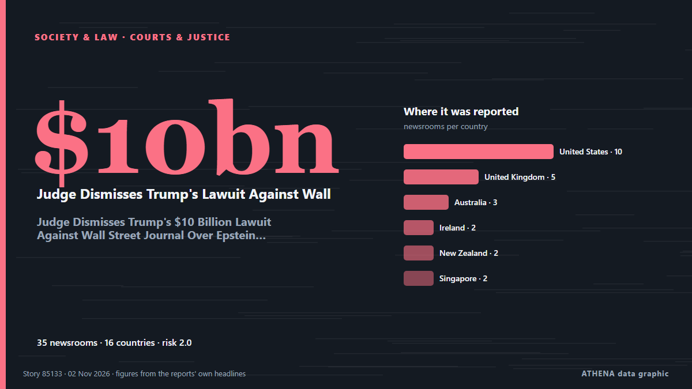

Judge Dismisses Trump's $10 Billion Lawuit Against Wall Street Journal Over Epstein Letter

Trump had sued for $10 billion after the newspaper's story was published in July 2025 detailing the president's alleged 2003 letter to Epstein, which apparently featured a drawing of a naked woman. from NDTV
Reported independently by 35 outlets in 16 countries since 31 Oct, first by The Independent; coverage is fading. ATHENA rates the risk moderate (2.0/10), driven mainly by the severity of the harm described and its geographic and sector reach. Confidence is 84% (high), with 35 independent outlets corroborating it and an average source reliability of 72%. Newsrooms by country: United States (9), United Kingdom (5), Australia (3). Coverage: 31 Oct to 2 Nov, 47 hours.
Why it matters: Legal and policy changes alter rights, obligations and public services for the people they reach.
What changed: 2 new reports from 2 newsrooms in the 24 hours to 2 Nov.
First reported as: Judge permanently throws out Trump’s Wall Street Journal defamation lawsuit over Epstein letter story
At a glance
Selected, scored and written by ATHENA's published methodology. No editor intervenes in individual events. How this is produced ›
| 31 Oct 19:59 UTC | 10 |
|---|---|
| 31 Oct 21:59 UTC | 6 |
| 31 Oct 23:59 UTC | 5 |
| 01 Nov 01:59 UTC | 1 |
| 01 Nov 03:59 UTC | 1 |
| 01 Nov 05:59 UTC | 1 |
| 01 Nov 07:59 UTC | 2 |
| 01 Nov 09:59 UTC | 2 |
| 01 Nov 11:59 UTC | 0 |
| 01 Nov 13:59 UTC | 3 |
| 01 Nov 15:59 UTC | 0 |
| 01 Nov 17:59 UTC | 0 |
| 01 Nov 19:59 UTC | 0 |
| 01 Nov 21:59 UTC | 0 |
| 01 Nov 23:59 UTC | 0 |
| 02 Nov 01:59 UTC | 0 |
| 02 Nov 03:59 UTC | 0 |
| 02 Nov 05:59 UTC | 1 |
| 02 Nov 07:59 UTC | 0 |
| 02 Nov 09:59 UTC | 0 |
| 02 Nov 11:59 UTC | 0 |
| 02 Nov 13:59 UTC | 0 |
| 02 Nov 15:59 UTC | 0 |
| 02 Nov 17:59 UTC | 1 |
Why these numbers
Importance
Risk
Confidence
The reporting — who reported it, and when
headline as published · opens the original- The Independent · United KingdomJudge permanently throws out Trump’s Wall Street Journal defamation lawsuit over Epstein letter story
- CBC News (alternative feed) · CanadaJudge throws out Trump suit against Wall Street Journal over Epstein letter
- New York Times Business · United StatesJudge Tosses Trump’s $10 Billion Suit Against The Wall Street Journal
- Irish Examiner · IrelandTrump lawsuit against Wall Street Journal over Epstein birthday letter rejected
- The Irish News (Belfast) · United KingdomTrump lawsuit against Wall Street Journal over Epstein birthday letter rejected
- Belfast Telegraph · United KingdomTrump lawsuit against Wall Street Journal over Epstein birthday letter rejected
- CNBC World · United StatesTrump defamation suit against Murdoch, WSJ over Epstein letter dismissed with prejudice
- Stuff · New Zealand‘Grasping at straws’: Judge dismisses Trump lawsuit over WSJ Epstein birthday letter story
- Sky News (World) · United KingdomJudge dismisses Trump's Wall Street Journal lawsuit
- PBS NewsHour · United StatesJudge dismisses Trump suit against Wall Street Journal over Epstein birthday letter
- Al Jazeera English · QatarTrump loses legal battle over Epstein-linked Wall Street Journal case
- Bangkok Post — page reader · ThailandUS judge dismisses Trump lawsuit against Wall Steet Journal over Epstein letter
- Variety · United StatesJudge Dismisses Trump’s Wall Street Journal Defamation Lawsuit Over Published Epstein ‘Birthday Book’ for a Second Time
- SBS News · AustraliaJudge dismisses Trump's defamation lawsuit over Epstein birthday letter report
- The Straits Times · SingaporeUS judge dismisses Trump lawsuit against Wall Street Journal over Epstein letter
- New Straits Times · MalaysiaJudge dismisses Trump's US$10b lawsuit against Wall Street Journal over Epstein letter
- The Hollywood Reporter · United StatesTrump Lawsuit Against Wall Street Journal Over Epstein Story Dismissed by Judge
- RNZ National · New ZealandJudge throws out Trump suit over Epstein letter
- BBC News · United KingdomJudge dismisses Trump's lawsuit against Wall Street Journal over Epstein birthday book
- CNA (Channel NewsAsia) · SingaporeUS judge dismisses Trump lawsuit against Wall Steet Journal over Epstein letter
- ABC News Australia · AustraliaJudge dismisses Trump lawsuit against Wall Street Journal over Epstein cartoon
- Sydney Morning Herald · Australia‘Grasping at straws’: Judge dismisses Trump suit against Wall Street Journal over Epstein letter
- SABC News · South AfricaJudge ends Trump’s attempts to sue WSJ over Epstein reporting
- MyJoyOnline · GhanaJudge dismisses Trump’s lawsuit against Wall Street Journal over Epstein birthday book
- NDTV · IndiaJudge Dismisses Trump's $10 Billion Lawuit Against Wall Street Journal Over Epstein Letter
- Anadolu Agency (English) · TurkeyUS judge permanently dismisses Trump’s defamation lawsuit against Wall Street Journal
- The National Herald · United States‘Grasping at Straws’: Judge Dismisses Trump Suit against Wall Street Journal over Epstein Letter
- Nile Post · UgandaJudge dismisses Trump's lawsuit against Wall Street Journal over Epstein birthday book
- RTÉ News · IrelandUS judge dismisses Trump lawsuit over Epstein letter
- Indian Express · IndiaTrump’s Epstein letter lawsuit: Why judge dismissed $10 billion case against Wall Street Journal
- The Hill · United StatesJudge dismisses Trump’s defamation suit against WSJ a second time
- Insurance Journal · United StatesWSJ Wins Dismissal of Trump’s $10 Billion Defamation Suit
- Law.com · United StatesTrump to Appeal Miami Judge's Dismissal of Wall Street Journal Lawsuit